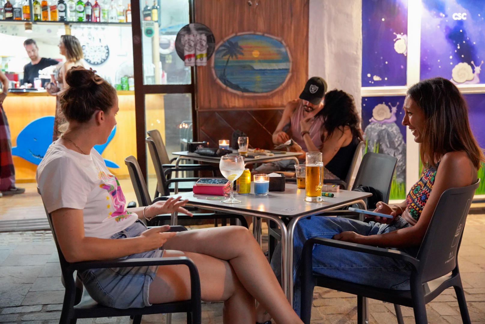
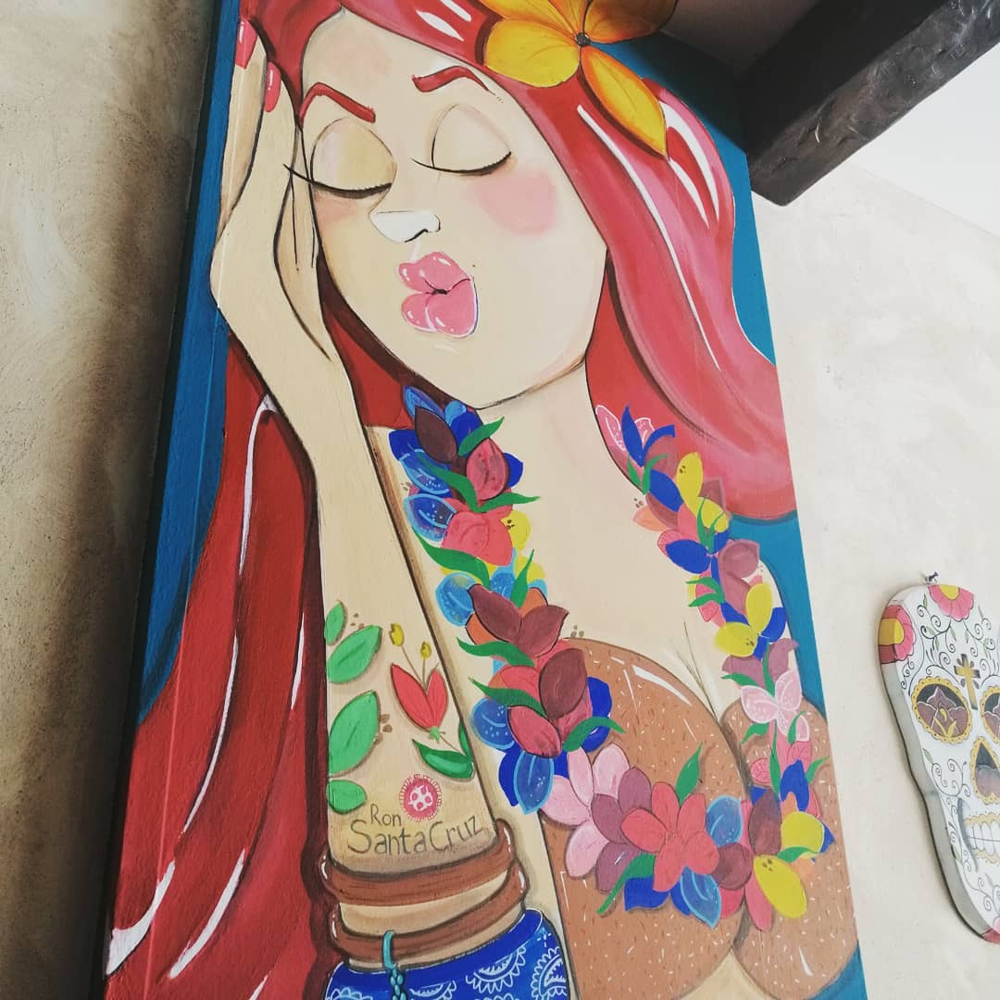
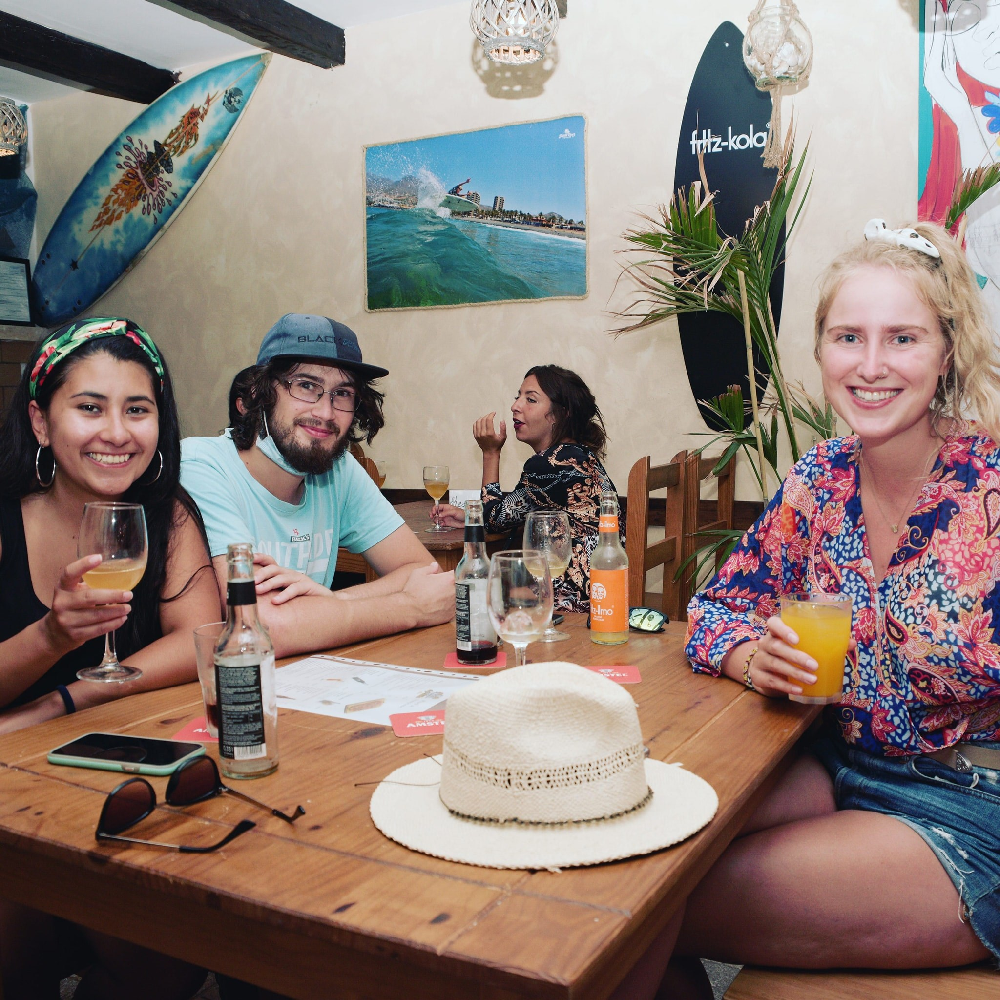
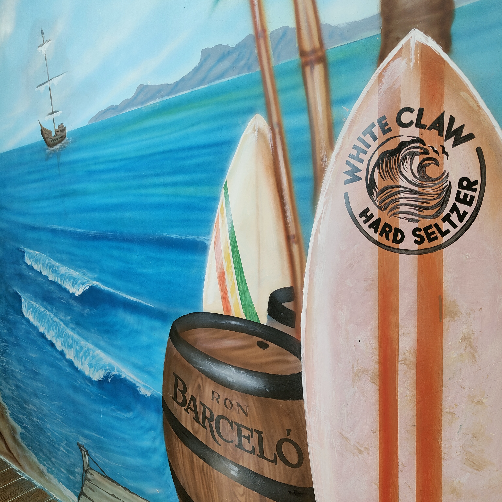
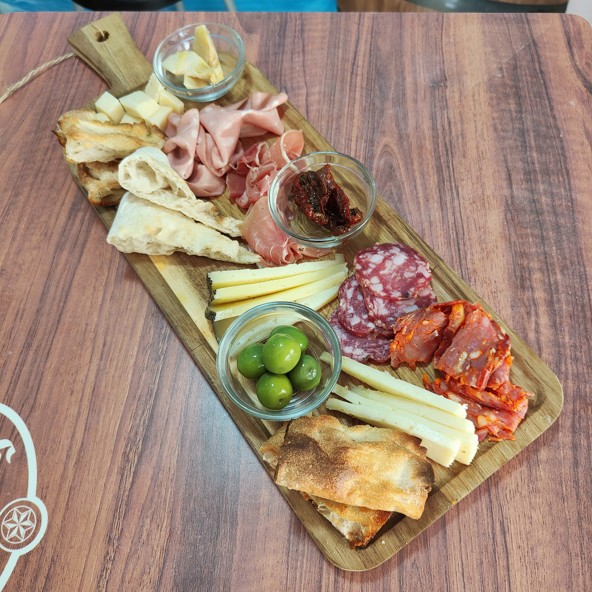
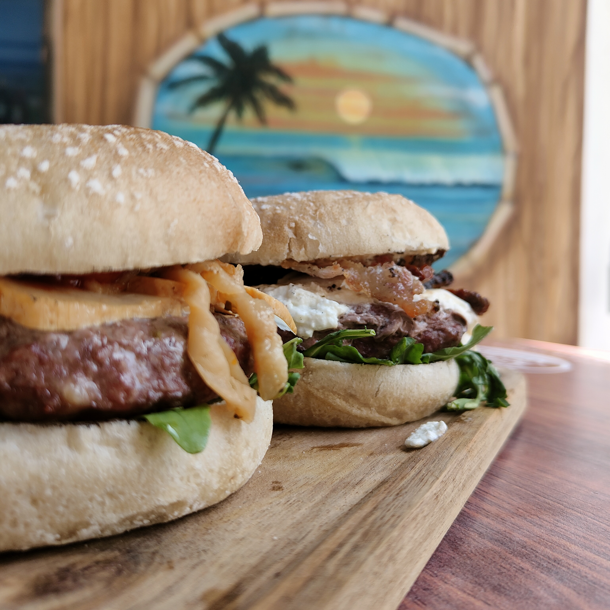
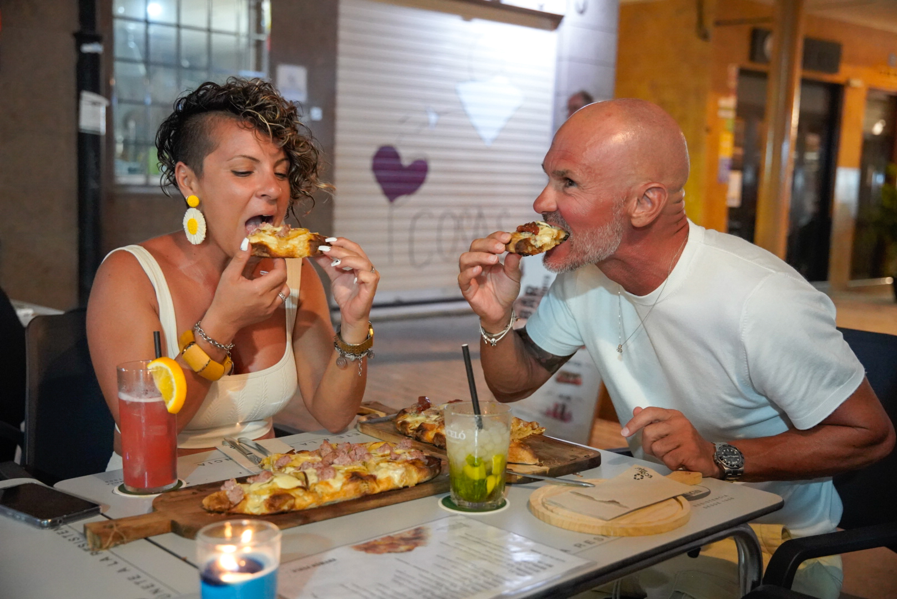
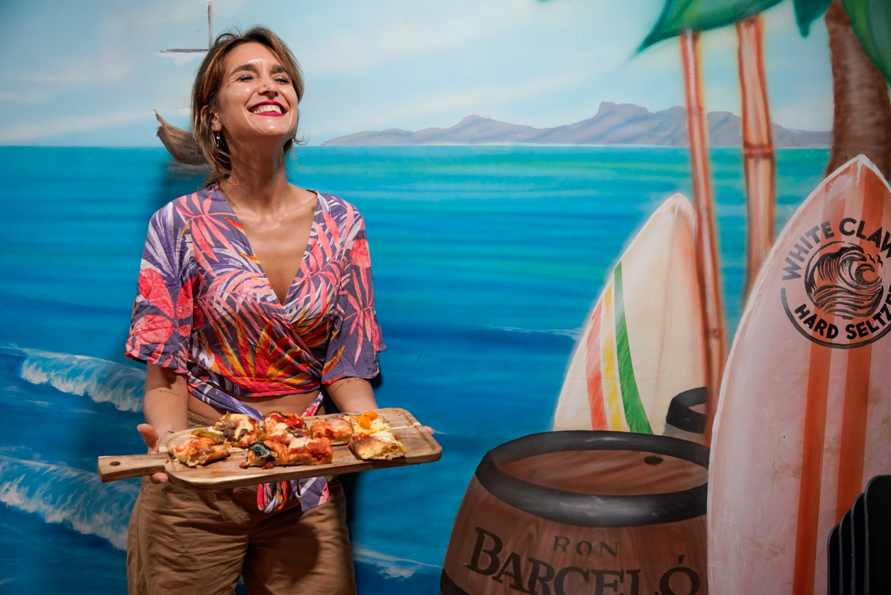
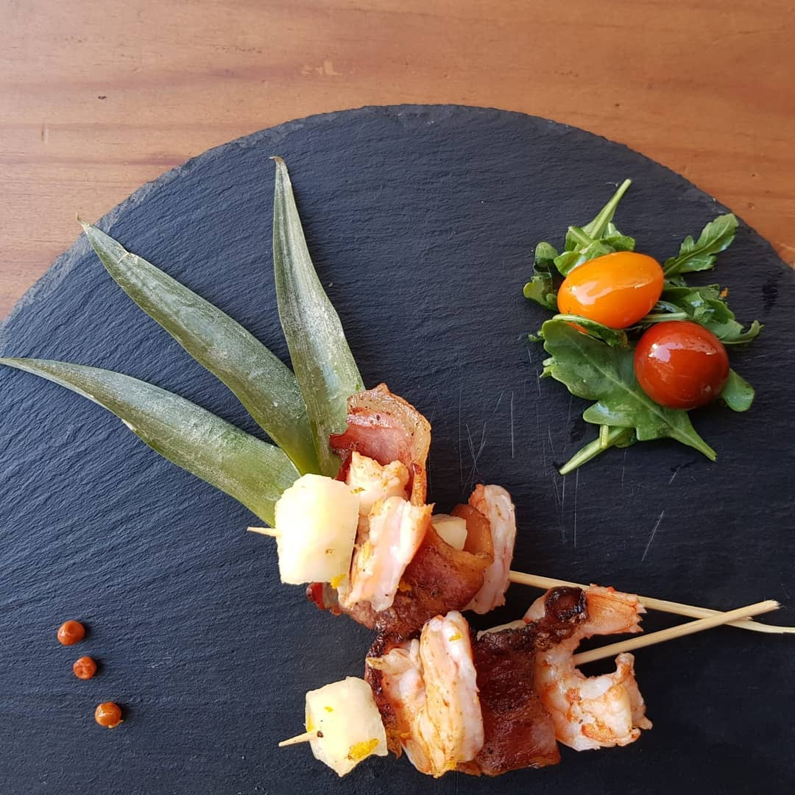
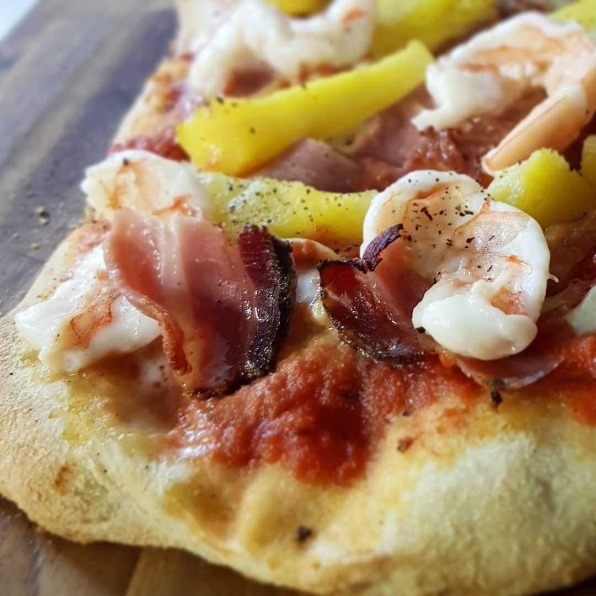
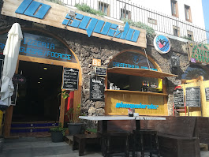
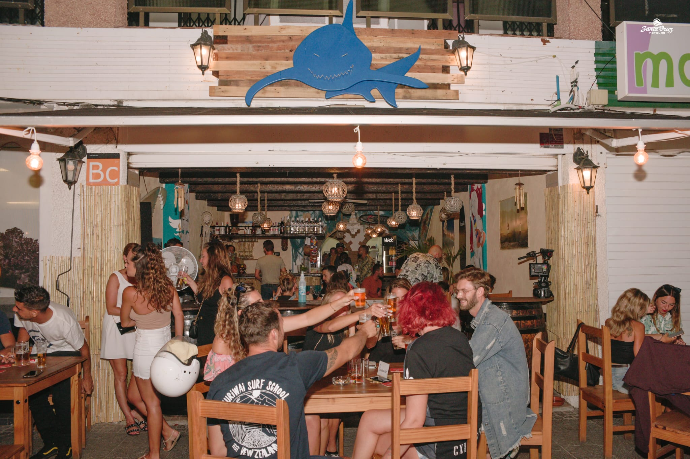
LO SQUALO Surf Bar Franchise è un modello replicabile per attivare, riposizionare e rendere redditizio un bar o un piccolo ristorante con identità surf, senza partire da zero. Non è un franchising classico. Non è un format rigido. È un sistema di attivazione reale, costruito sull'esperienza diretta in locali, eventi, gestione operativa e marketing applicato.
Il tuo locale, il tuo investimento, la tua attività. LO SQUALO entra come partner operativo e di marca, non come proprietario. La proprietà e la responsabilità restano tue.
Qualsiasi accordo con proprietari, fornitori o licenze lo firmi tu. Niente passa da LO SQUALO. La trasparenza è la base del rapporto.
Identità visiva, sistema operativo, strategia di marketing e presenza attiva nella fase di avvio. Tutto quello che serve per non improvvisare.
Ruoli definiti dal primo giorno. Nessuna sorpresa, nessun costo nascosto, nessuna dipendenza inutile. Una collaborazione con criterio.
Hai lo spazio ma ti servono identità, sistema e avvio. LO SQUALO entra, valuta e attiva il format più adatto alla tua situazione concreta.
Sei in fase di ricerca del locale. LO SQUALO ti accompagna fin dalla scelta dello spazio, con criteri operativi e di sostenibilità reali.
Ti serve chiarezza prima di impegnarti. Organizziamo una sessione di lavoro per spiegare il modello, i passaggi e cosa comporta davvero.
Parli subito di numeri. Presentiamo i range di investimento, le condizioni di collaborazione e il ritorno atteso in base al tipo di locale.
Se sogni di vivere di surf e di sole, il Surf Bar Franchise è la tua occasione. Un'attività con un'anima, in una delle destinazioni più attraenti d'Europa.
Contattaci per ricevere il dossier completo
💬 Contattaci su WhatsApp